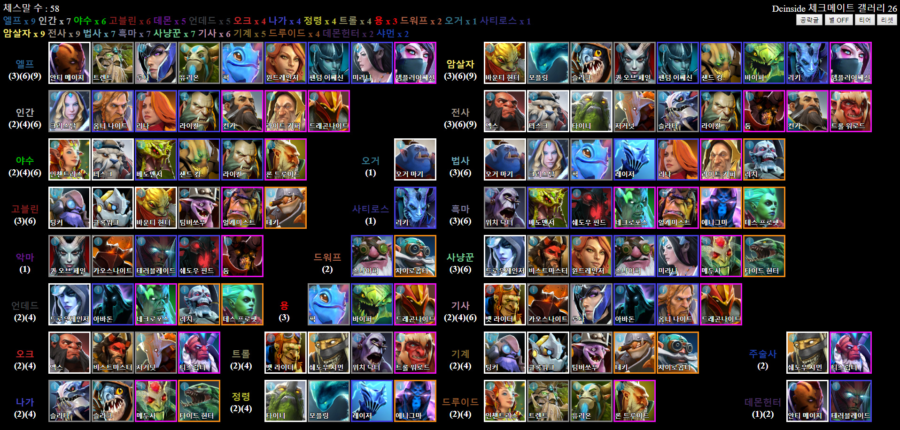
(종족과 시너지표. 숫자는 시너지가 나기위한 최소 영웅갯수를 말한다)
조합과 시너지
오토체스에는 "종족"과 "시너지" 두가지의 추가 효과기능이 있다.
첫번째로 종족은 위 사진의 왼쪽부분에 위치한 '엘프, 인간, 야수, 고블린, 악마, 언데드'등등이 있고
두번쨰로 시너지는 사진의 오른쪽에 위치한 '암살자, 전사, 법사, 흑마'등등이 있다
이들을 적절히 조합하여 모아진 체스말들로 최대한의 효율을 가져가는게 오토체스의 기본 공략이다
각각 시너지마다 장단점이 있지만 상황마다 너무 변수가 많고
조합마다 장단점이 부각되는 부분이 다르기 때문에 전부 서술할수 없을 뿐더러
게임을 하면서 경험속에서 익히는게 글로 읽는것보다 빠르다
시너지 종류
| 종족 | 시너지 이름 | 시너지 효과 | 해당 영웅 |
|---|---|---|---|
| 야수 (Beast) | 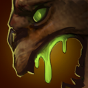야생의 힘 (Power of the Wild) | 모든 아군(소환물 포함)에게 공격력 +10%(2), +20%(4) | 얼음폭군, 요술사, 늑대인간, 맹독사, 고독한 드루이드 |
| 악마 (Demon) | 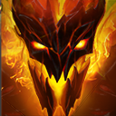지옥의 힘 (Fel Power) | 아군 필드에 단일 종류의 악마가 존재할 때 발동. 공격 대상에게 공격력의 50%에 해당되는 추가 순수 피해를 입힘 | 고통의 여왕, 혼돈 기사, 그림자 마귀, 테러블레이드, 파멸의 사도 |
| 드워프 (Dwarf) | 단단한 코륨 고글 (Take Aim) | 아군 드워프의 공격 사거리 +300(1) | 저격수, 자이로콥터 |
| 용 (Dragon) | 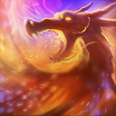전투의 울부짖음 (Attunement) | 라운드가 시작될 때 모든 아군 용이 마나 100을 가지고 시작 | 퍽, 바이퍼, 용기사 |
| 정령 (Element) | 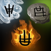정령의 기운 (Elemental Essence) | 모든 아군 정령, 모든 아군을 근접 공격하는 적을 30%의 확률로 4초간 석화 | 타이니, 모플링, 레이저, 에니그마 |
| 엘프 (Elf) | 은폐 (Evasion) | 모든 아군 엘프에게 회피 +20%(3), +25%(6), +30%(9) | 항마사, 루나, 미라나, 자연의 예언자, 퍽, 나무정령 수호자, 유령 자객, 바람순찰자, 암살 기사, 이오 |
| 고블린 (Goblin) | 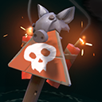생명의 갑옷 (Take Aim) | 무작위 아군 1명(3), 모든 아군(6)에게 +15 방어력과 +10 초당 HP 회복 | 현상금 사냥꾼, 태엽장이, 땜장이, 벌목꾼, 연금술사, 기술단 |
| 신 (God) | 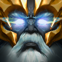독존 (Overweening Superiority) | 아군 필드에 신을 제외한 기타 종족 특성이 발동 되지 않았을 때 발동. 모든 아군 유닛들의 스킬 재사용 대기시간이 절반(1)/절반(2) 감소 | 마르스, 제우스 |
| 인간 (Human) | 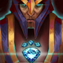침묵 (Silencer) | 모든 아군 인간은 공격할 때 20%(2), 25%(4), 30%(6)의 확률로 공격 대상을 4초간 침묵 | 수정의 여인, 늑대인간, 리나, 전능기사, 빛의 수호자, 용기사, 컨카 |
| 나가 (Naga) | 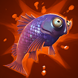비늘 갑옷 (Silence Scale) | 모든 아군에게 마법 저항력 +35% | 슬라다, 슬라크, 메두사, 파도사냥꾼 |
| 오거 (Ogre) | 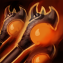고리안 혈통 (Two Heads) | 모든 아군의 최대 체력 +5%(1) | 오거 마법사, 연금술사 |
| 오크 (Orc) | 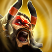피의 격노 (Take Aim) | 모든 아군 오크의 HP +250(2), +350(4) | 도끼전사, 가면무사, 야수지배자, 디스럽터 |
| 트롤 (Troll) | 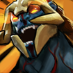광폭화 (Voodoo Frenzy) | 모든 아군 트롤의 공격 속도 +35(2) 모든 아군의 공격 속도 +30(4) | 그림자 주술사, 박쥐기수, 저주술사, 대즐, 트롤 전쟁군주 |
| 언데드 (Undead) | 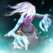공포 (Horror) | 모든 적군의 방어력 -4(2), -6(4) | 드로우 레인저, 아바돈, 강령사제, 죽음의 예언자, 리치 |
| 직업 | 시너지 이름 | 시너지 효과 | 해당 영웅 |
|---|---|---|---|
| 암살자 (Assassin) | 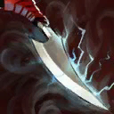기습 (Coup de Grâce) | 아군 암살자가 15% 확률로 3.5배(3), 4.5배(6)의 피해를 입힘 | 현상금 사냥꾼, 고통의 여왕, 모플링, 바이퍼, 유령 자객, 암살 기사 |
| 악마 사냥꾼 (Demon Hunter) | 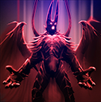영혼분쇄 (Shattered Soul) | 상대방이 악마 효과를 잃음(1) 아군이 악마 효과를 절대로 잃지 않음(2) 공격 대상에게 공격력의 50%에 해당되는 추가 순수 피해를 입힘 | 항마사, 테러블레이드 |
| 드루이드 (Druid) | 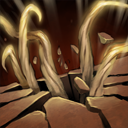급속성장 (Synergy) | 드루이드들은 2유닛만으로 2성을 만들 수 있음(2) 드루이드들은 2유닛만으로 3성을 만들 수 있음(4) | 요술사, 자연의 예언자, 나무정령 수호자,고독한 드루이드 |
| 사냥꾼 (Hunter) |  정조준 사격 정조준 사격(Aimed Shot) | 모든 아군 사냥꾼에게 공격력 +30, 30% 확률로 회피 불가 공격(3), 공격력 +40, 40% 확률로 회피 불가 공격(6) | 드로우 레인저, 미라나, 야수지배자, 바람순찰자, 저격수, 메두사, 파도사냥꾼 |
| 기사 (Knight) | 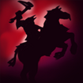신성 보호 (Divine Protection) | 모든 아군 기사에게 +40%(3), 모든 아군에게 +35%(6)의 확률로 3초 동안 방어막이 생성됨 방어막 중첩마다 방어력 +30, 마법 저항력 +75% 30%의 확률로 4초간 석화 | 타이니, 모플링, 레이저, 에니그마 |
| 마법사 (Mage) | 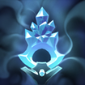주문의 메아리 (Magic Vulnerability) | 모든 적군의 마법 저항력 -35%(3), -45%(6) | 오거 마법사, 수정의 여인, 퍽, 레이저, 리나, 빛의 수호자, 리치, 제우스 |
| 메카 (Mech) | 자동 수리 (Self Repair) | 모든 아군 기계에게 +15(2), +25(4) 초당 HP 회복 | 땜장이, 태엽장이, 벌목꾼, 기술단, 자이로콥터 |
| 사제 (Priest) |  장막 장막(Barrier) | 전투 패배 시 짐꾼이 입는 피해 20% 감소(1) | 대즐 |
| 주술사 (Shaman) | 사술 (Hex) | 라운드가 시작될 때 무작위 적군 1명을 6초간 무해한 동물로 바꿈(2) | 그림자 주술사, 디스럽터 |
| 흑마법사 (Warlock) | 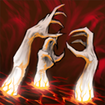영혼 착취 (Siphon Soul) | 모든 아군에게 흡혈 및 주문 흡혈 +15%(3), +25%(6) | 저주술사, 그림자 마귀, 맹독사, 강령사제, 연금술사, 에니그마, 죽음의 예언자 |
| 전사 (Warrior) | 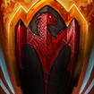강화 갑옷 (Fortified Armor) | 모든 아군 전사에게 방어력 +5(3), +7(6), +9(9) | 도끼전사, 마르스, 얼음폭군, 타이니, 가면무사, 슬라다, 늑대인간, 컨카, 트롤 전쟁군주, 파멸의 사도 |
도움이 될만한 링크들
유닛 티어리스트:
https://qihl.gg/tierlist
전적 확인 사이트:
https://autochess.op.gg/
http://www.autochess-stats.com/